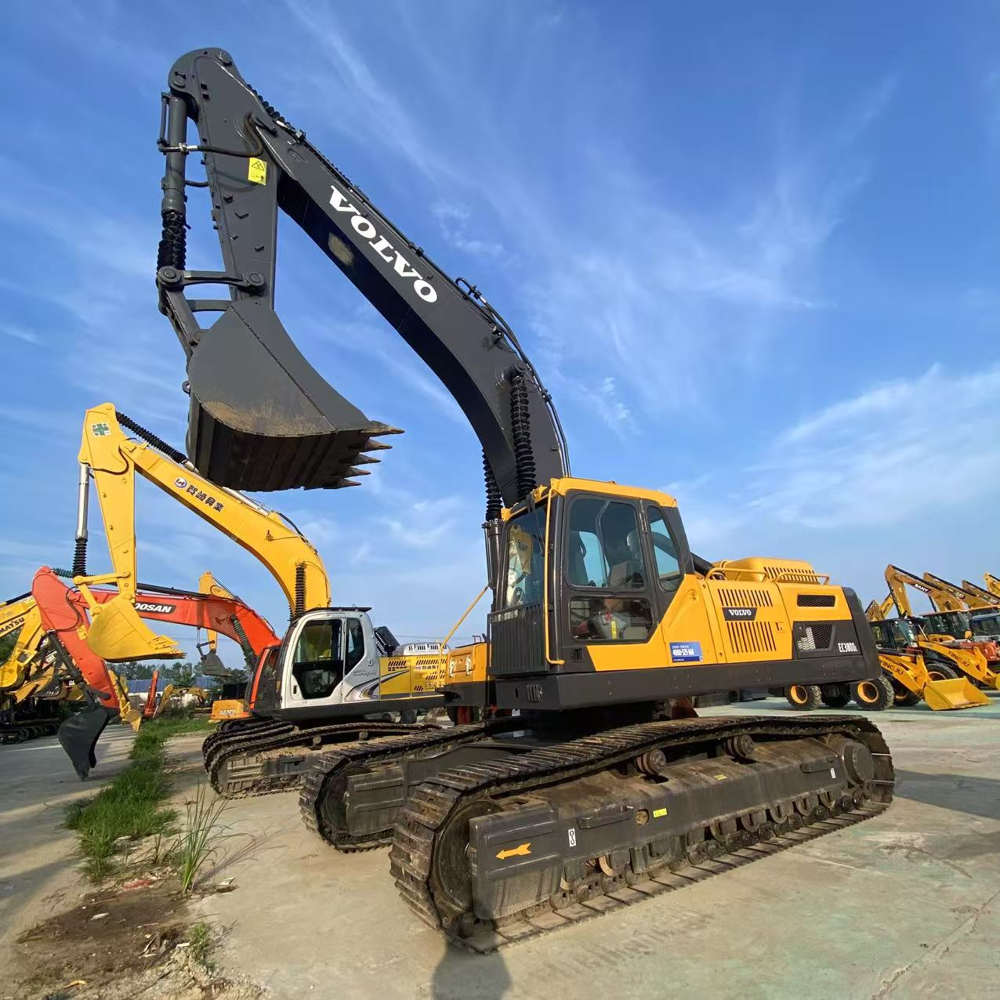

Refurbished Volvo EC380 Excavator
The Volvo EC380 is a powerful and reliable crawler excavator that has earned a reputation for delivering high productivity and efficiency across a variety of industries, including construction, mining, and heavy material handling. Known for its robust build, fuel-efficient engine, and advanced hydraulics, the EC380 is ideal for tough job sites requiring heavy lifting, digging, and material movement. Opting for a refurbished Volvo EC380 provides a cost-effective way to access this high-performance equipment without the steep price tag of a new model.
Honestly, it's almost impossible to buy a brand new excavator from China. They either don't exist or are made in China. If a Chinese seller tells you their Caterpillar/Komatsu/Volvo/Kobelco/Hitachi is brand new, they're lying. Therefore, a refurbished excavator is your best bet.

Here are the detailed specifications for a refurbished Volvo EC380E excavator:
Operating Weight and Dimensions
- Operating Weight: 38,000–39,845 kg
- Transport Length: ~12.22 meters
- Transport Width: ~3.34 meters
- Transport Height: ~3.44 meters
- Tail Swing Radius: ~3.8 meters
- Ground Clearance: ~500 mm
- Track Width: 600 mm standard
Engine and Powertrain
- Engine Model: Volvo D13J (Tier 4 Final compliant)
- Rated Power Output: ~230–235 kW (308–315 hp) @ 1,800 rpm
- Maximum Torque: ~1,800–1,950 Nm
- Fuel Tank Capacity: ~685–700 liters
- Travel Speed: 3.0–5.0 km/h
- Swing Speed: ~8.6 rpm
- Gradeability: Up to 35°
Hydraulic System
- Main Pump Type: Electro-hydraulic system with intelligent flow control
- Flow Rate: ~2 × 360–380 L/min
- System Pressure: Up to 36 MPa
- Hydraulic Oil Capacity: ~500 liters
- Boom/Arm/Bucket Priority: Programmable for faster cycle times
- Regeneration System: Prevents cavitation and improves simultaneous operations
Performance Metrics
- Bucket Capacity: 1.9–2.53 m³ (SAE heaped)
- Max Digging Depth: ~7.59 meters
- Max Reach (Horizontal): ~11.22 meters
- Max Dump Height: ~7.2 meters
- Bucket Digging Force: ~215–220 kN
- Arm Digging Force: ~180–190 kN
Cab and Operator Features
- Cab Type: ROPS/FOPS certified
- Display: LCD monitor with fuel tracking and diagnostics
- Controls: Electro-hydraulic joysticks with customizable sensitivity
- Comfort: Air suspension seat, climate control, low vibration cab
- Visibility: Rear-view camera, wide glass area, LED work lights
Smart Features and Efficiency
- Fuel Efficiency:
- Volvo ECO mode with on-demand flow control
- Auto idle and auto engine shutdown
- Work mode selector: I (Idle), F (Fine), G (General), H (Heavy), P (Power Max)
- Emissions Control: Tier 4 Final (DPF + SCR + EGR)
- Telematics Ready: Volvo CareTrack system for remote diagnostics and fleet tracking
Attachments Compatibility
- Standard Bucket: 1.9–2.53 m³
- Optional Tools: Hydraulic breaker, demolition shear, compactor, ripper
- Quick Coupler: Hydraulic or manual options available
Refurbishment Scope
Refurbished EC380 units typically include:
- Engine Overhaul: Turbocharger, injectors, seals, cooling system
- Hydraulic Restoration: Pump recalibration, valve block testing, hose replacement
- Electrical Diagnostics: Monitor, sensors, wiring harness
- Cab Reconditioning: Seat, joysticks, HVAC, repainting
- Structural Repairs: Boom/bucket welding, bushing replacement, undercarriage rebuild
Overview of the Volvo EC380 Excavator
The Volvo EC380 is part of Volvo's mid-sized range of crawler excavators, designed for versatility, power, and comfort. It is commonly used for a wide array of applications, including road construction, trenching, material handling, and site preparation.
Key Specifications of the Volvo EC380
-
Operating Weight: Approximately 38,000–40,000 kg (83,800–88,200 lbs)
-
Engine Power: 220 kW (295 hp)
-
Max Digging Depth: Up to 7.7 meters (25.3 feet)
-
Max Reach: Approximately 11 meters (36 feet)
-
Bucket Capacity: Typically 1.4–2.2 cubic meters (50–78 cubic feet)
-
Fuel Tank Capacity: Around 500 liters (132 gallons)
-
Travel Speed: Up to 5.4 km/h (3.3 mph)
These specifications reveal that the Volvo EC380 is a robust machine with ample lifting capacity and digging depth, making it well-suited for heavy-duty tasks and a wide range of applications.
Engine and Performance Efficiency
The Volvo EC380 is equipped with a highly efficient engine that balances power and fuel efficiency while meeting modern emissions standards.
-
Engine Power: The EC380 is powered by a Volvo D8E engine, delivering a solid 220 kW (295 hp) of power. This engine is capable of handling tough tasks such as heavy lifting, digging through dense material, and operating demanding attachments. The engine's design ensures consistent performance, even in challenging working conditions.
-
Fuel Efficiency: Fuel consumption is optimized through the Volvo ECO mode, which adjusts the engine's performance based on load and operational demands. The machine intelligently manages fuel usage, offering greater fuel savings during less intense work, which makes it an ideal choice for long-duration projects or those with variable workloads.
-
Emissions Compliance: The EC380 complies with Tier 4 Final emissions standards, ensuring low emissions without compromising on performance. This makes it suitable for projects in areas with strict environmental regulations, all while maintaining the high productivity levels Volvo equipment is known for.
Hydraulics and Performance Capabilities
The hydraulic system of the Volvo EC380 is built for speed, power, and precision. It delivers enhanced cycle times, making it perfect for operations that require rapid digging and lifting.
-
Advanced Hydraulic System: The EC380 features a load-sensing hydraulic system that adjusts the flow of hydraulic fluid to match the load being moved. This results in faster cycle times, smoother operation, and better fuel efficiency. The system is also designed to be more responsive, ensuring that operators can make precise movements with ease.
-
High-Power Digging: With powerful hydraulic pumps, the EC380 can deliver strong digging force, making it an excellent choice for tough tasks such as digging through hard soil, rock, or compacted material. Its powerful hydraulics help minimize downtime, keeping the machine productive over long hours of work.
Durability and Construction
Volvo machines are designed with durability in mind, and the EC380 is no exception. It’s built to perform reliably in tough conditions and handle the demands of heavy-duty work.
-
Heavy-Duty Undercarriage: The EC380 is equipped with a reinforced undercarriage designed to withstand the stresses of rough terrain. Whether working on uneven surfaces, slopes, or in muddy conditions, the machine maintains excellent stability, which is crucial for tasks such as grading or lifting.
-
High-Strength Components: The EC380 is built with high-strength steel components to resist wear and tear. These reinforced components extend the life of the excavator, even when subjected to abrasive materials or extreme working conditions.
-
Track System: The EC380 features a reliable track system designed for maximum traction in soft or uneven ground. This ensures that the machine remains stable, providing better performance in challenging terrains, including construction sites and mining operations.
Operator Comfort and Safety
The Volvo EC380 places a strong emphasis on operator comfort, making long hours in the cab more productive and less tiring.
-
Spacious Operator Cab: The EC380 features a roomy operator cabin with excellent visibility, ergonomic controls, and a high-quality seat. The cab is designed for comfort and productivity, reducing operator fatigue during extended use.
-
Advanced Control Systems: The EC380 comes with a user-friendly monitoring system that displays real-time information such as fuel consumption, hydraulic pressure, and machine diagnostics. This helps operators stay informed and adjust their operations for maximum efficiency.
-
Enhanced Visibility: Volvo's design prioritizes visibility, ensuring that the operator has a clear view of the working area, including the boom and bucket. This enhances safety and reduces the risk of accidents, especially in tight spaces or busy job sites.
-
Noise and Vibration Control: Noise reduction features and a vibration-dampening seat help create a more comfortable working environment, allowing the operator to focus on the task without being disturbed by loud noises or excessive vibrations.
Benefits of Choosing a Refurbished Volvo EC380
Opting for a refurbished Volvo EC380 offers several advantages, providing businesses with the same performance and reliability as a new machine but at a significantly lower cost.
-
Lower Cost: Purchasing a refurbished EC380 can save businesses 20-40% compared to buying a new model. For construction companies or equipment rental businesses, this can make a big difference in the overall project budget.
-
Comprehensive Refurbishment Process: Refurbished EC380 excavators undergo a thorough inspection and repair process. Key components such as the engine, hydraulic systems, tracks, and electrical systems are often replaced or refurbished, ensuring that the machine meets or exceeds factory standards.
-
Warranty and Support: Many refurbished EC380 excavators come with warranties, offering peace of mind for businesses. Additionally, many refurbished machines come with factory-backed support and access to original parts, further ensuring reliable operation.
-
Sustainability: By purchasing a refurbished machine, businesses contribute to sustainability by reducing the need for new manufacturing and extending the life of existing equipment. This is an environmentally responsible choice that reduces waste and conserves resources.
Maintenance Tips for the Volvo EC380
To ensure the longevity and efficiency of the Volvo EC380, regular maintenance is essential. Here are some key maintenance tips:
-
Hydraulic System: Regularly check hydraulic fluid levels and replace filters according to the manufacturer's schedule. Inspect hoses and components for leaks, as this can negatively impact performance.
-
Engine Maintenance: Keep the engine oil and air filters clean, and replace the oil at regular intervals. Ensure the cooling system is functioning properly to avoid overheating.
-
Tracks and Undercarriage: Inspect the tracks and undercarriage regularly. Make sure there’s no excessive wear on the rollers, sprockets, and tracks. Keeping the undercarriage clean will also extend its life.
-
Electrical Systems: Regularly check the electrical connections, especially in harsh environments where corrosion may occur. Clean and maintain electrical components to ensure reliable operation.
-
General Inspections: Conduct periodic inspections of the fuel, exhaust, and cooling systems. Make sure that all systems are working efficiently and replace any worn or damaged parts as needed.
Conclusion
The Volvo EC380 is a powerful, durable, and efficient excavator that excels in demanding environments and heavy-duty applications. Whether used for digging, lifting, or material handling, the EC380 provides exceptional performance and versatility. Opting for a refurbished EC380 offers a cost-effective solution for businesses, providing the same reliability and performance as a new machine, with substantial savings. With proper maintenance, a refurbished Volvo EC380 can continue to deliver impressive results for years to come, making it an excellent choice for any project.
Our Commitment
- 2 years / 4000 hours warranty.
- EPA certified.
- No sweatshop labor.
Contacts

- [email protected]
- Youtube Instagram Facebook
- Navigation: G206 (Sishu Bridge) in Changfeng County, Hefei City, Anhui Province, 200 meters north to the east